Computer-vision and deep-learning practitioner focused on making generative visual systems
controllable, decomposable, and interpretable. Genuinely curious across
disciplines. In computer vision: designed, built, and still iterating on the Makeup Replayer, a
makeup-decomposition pipeline. In industry: led an AI-agent feature for an employer's
creative-canvas platform and delivered AIGC visuals across e-commerce categories. Earlier in
AI4S: contributed protein-representation modeling and VAEs. Information & Computing Science
undergraduate at XJTLU, class of 2027, bilingual EN/ZH.
Role: Solo — Design + Implementation · 2026.01–present
Look 1 · clean / 日杂 — left: per-region decomposition + palette; right: the look replayed stroke by stroke.Look 2 · HK retro / 港风 — same face, different target, same four-stage pipeline.Look 3 · K-soft / 韩系挂雾 — final stroke reconstructs the target exactly.
3D twin + makeup try-on — later prototype: a 3D face twin with makeup try-on.
A makeup decompiler: give it a finished makeup photo and it returns a sequence
of brushstrokes you can replay on your own face. The makeup is recovered as four decoupled stages —
Peel — closed-form inversion of α-blended skin + pigment, with a Signed-D term that preserves dark negative values (eyeliner, contour) and bilateral-filter denoising.
Decompose — MediaPipe-468 region segmentation + a temperature-scaled Gaussian-mixture decomposition of each region's pigment layer (evaluated a convex-hull unmix, ultimately dropped it in favour of the Gaussian-mixture model).
Palette Aggregation — merging visually similar / mutually-substitutable colors down to the few that matter.
Replay — Porter-Duff cumulative-coverage compositing; a non-trivial λ derivation guarantees the final stroke reconstructs the target exactly.
Engineering · pure NumPy / OpenCV / scikit-learn — no GPU, end-to-end under 30s
on CPU for a 6MP image, per-region RMSE ≈ 2–4 / 255. The four modules (Peel / Segmentation /
Unmix / Step Generator) each stand alone for adjacent use-cases: dermatology before/after
quantification, brand-color matching, layered-tutorial generation.
3D twin & try-on · later designed and implemented a prototype for a 3D
face twin and makeup try-ons (demo below).
Next · grafting this decomposable, controllable makeup representation onto a
DiT / diffusion backbone for end-to-end controllable generation.
▲ The agent driving the canvas: a single prompt ("create 5 nodes, each in a different language")
is decomposed into tool calls that build the nodes directly on the canvas.
At HZKJ — Suzhou's first OPC in the motion-comic (漫剧) industry — I own the
entire Claude Code Agent feature built on top of the company's production canvas, turning the
model from a "chat assistant" into a real production tool that non-technical directors can drive.
Agent Runtime — spawn Claude Code as an independent subprocess so the agent stays decoupled from the main app and can update on its own cadence.
Graphical interface — built on the CLI plus a browser-plugin approach, so directors operate the agent without ever touching a terminal.
Tool-List infrastructure — every canvas operation exposed as an API and registered to Claude Code's tool list, letting the model manipulate the canvas directly.
Skill integration — loading the company's private knowledge assets and custom Skills, then iterating tools against real production workflows.
Status: open / actively iterating — 5 of 20 planned tools currently stable; platform reaches 400+ creators.
A selection of e-commerce product visuals produced with generative AI — across different
platforms (Xiaohongshu, Douyin, Taobao, TikTok) and product
categories (jewelry, jade & gold, perfume, daily goods), each tuned to its own
audience, format, and brand tone.
Product design · Prototyping · CPT208 group project
Role: Lead Designer · Ideation
TrainerSync is a concept gym-training app built around three functional pillars —
Plan, Monitor, and Connect. Plan lets users
filter and queue exercises with live visual guidance and per-set logging; Monitor tracks
heart-rate in real time with breathing-light pacing cues and an intelligent post-session
summary; Connect surfaces live equipment occupancy and lightweight peer messaging for set-checks
and next-turn booking. I led the ideation and visual design — core user flows, information
architecture, and the component system.
FR1 · Plan · FR2 · Monitor
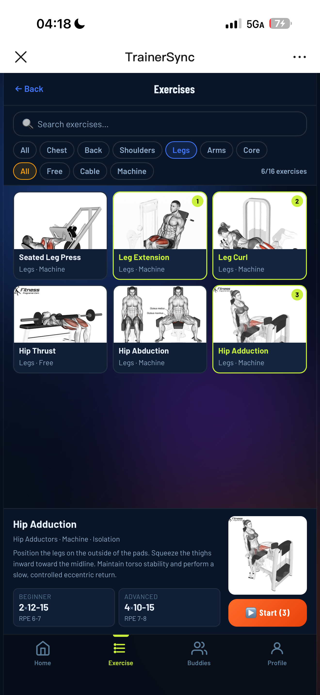
Exercise Library — filter chips by muscle group, numbered queue building
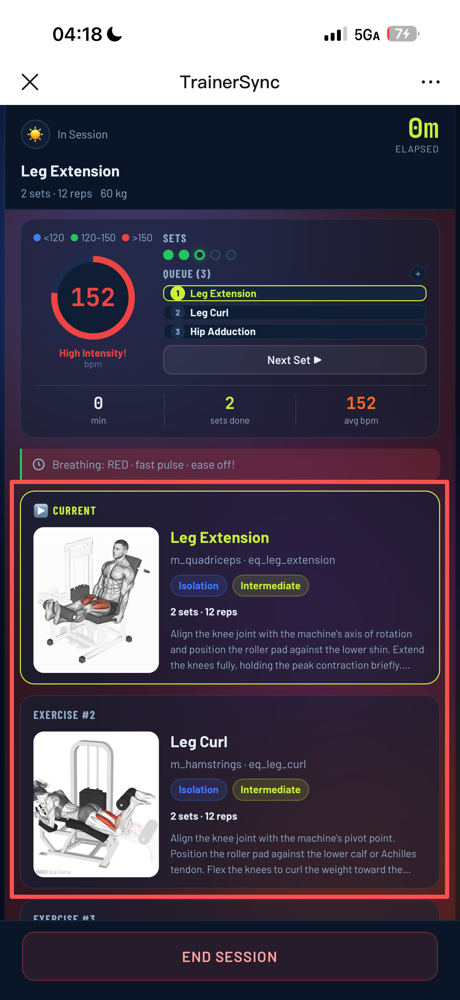
Live Session — exercise demo panel with set counter and reorder controls
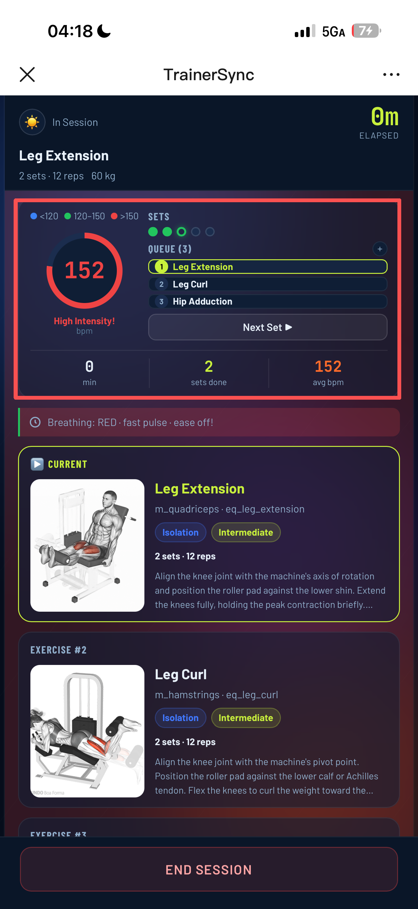
In-Session Monitor — live HR ring with current bpm readout
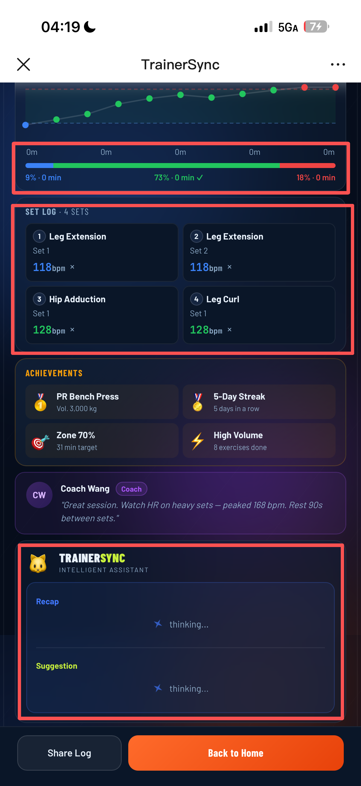
Pace Guidance — breathing-light overlay responds to HR zone
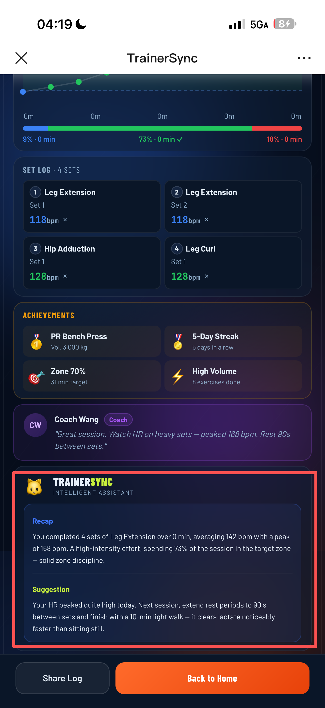
HR Zones — blue (rest) · green (target 120–150) · red (high intensity)
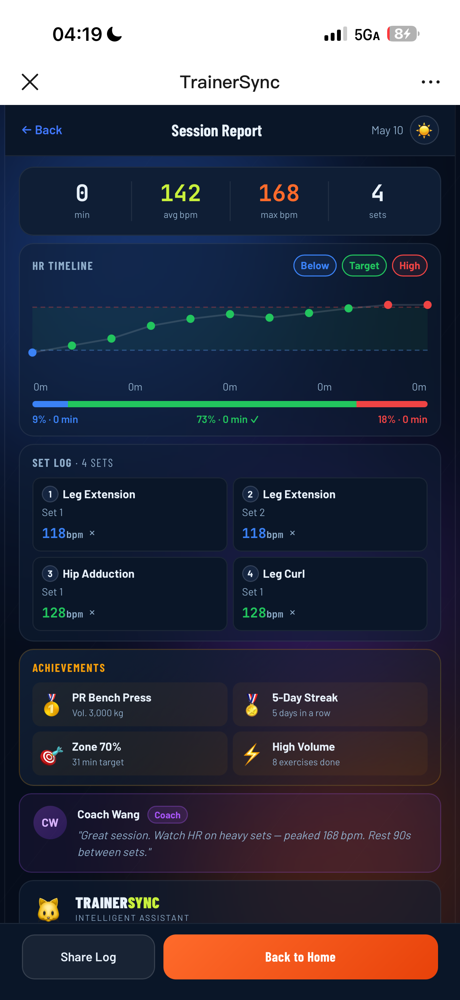
Session Summary — HR timeline, sets completed, AI analysis text
FR3 · Connect
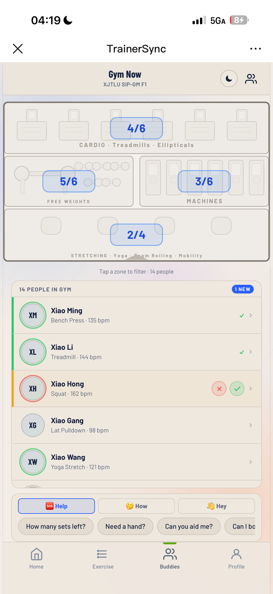
Gym Floor Map — live zone occupancy counts and peer positions
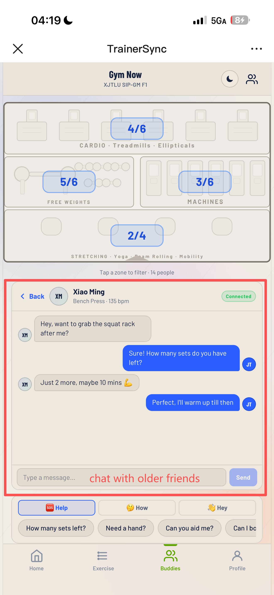
Buddy Chat — conversation panel with gym peer
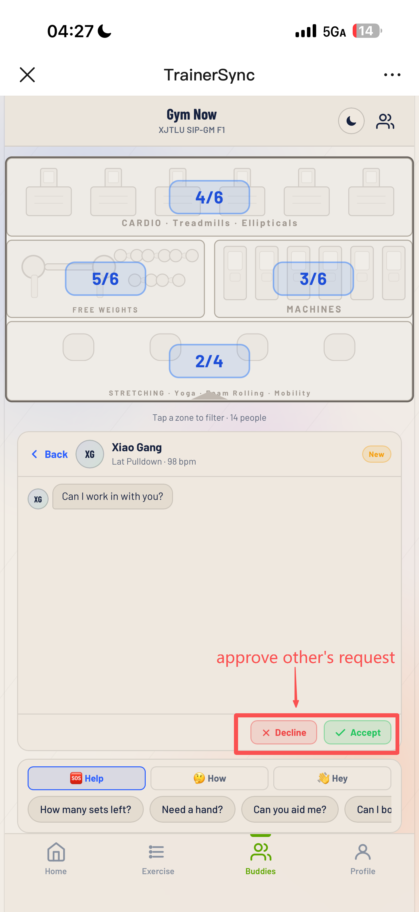
Set-Check — pre-canned message asking how many sets remain
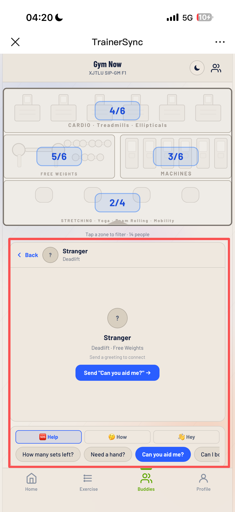
Pre-Book — request next turn at the current equipment
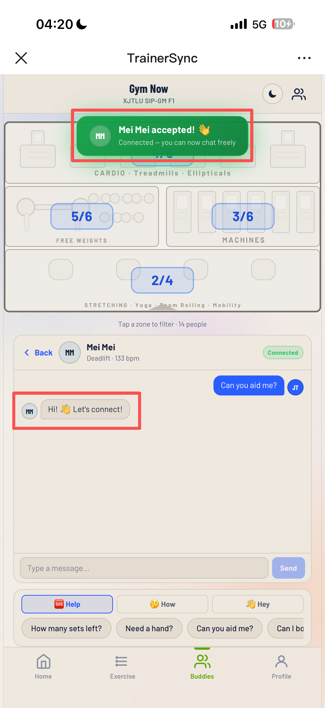
Confirmed — booking status reply and message thread
Full-stack web · Team of [N] · University course project
Role: Group Leader · Main Developer · Deliverables Orchestrator
A booking platform that matches end-users with verified domain experts for paid one-on-one
consultations — covering search, scheduling, payment, and post-session review, across three
role surfaces: Customer, Specialist, and Admin.
As group leader I owned the architecture, drove the main implementation, and orchestrated all
course deliverables (requirements, design docs, sprint reports, final presentation) for a team
of [N] contributors.
Synthetic Biology · MIT Grand Jamboree (Paris) · Manufacture track · Protein modeling + commercialization
Role: Protein Modeling + Commercialization · 2023.12–2025.1
XJTLU-China's 2024 iGEM team (MIT-hosted international synthetic-biology competition, Manufacture
track, presented at the Grand Jamboree in Paris). Our project optimized a fish-oil
biosynthesis pathway through protein engineering. On the modeling team I ran
semi-rational sequence analysis and multi-tool structural modeling with molecular-dynamics
simulation to screen the best engineered protein; downstream we ordered the edited genes and
measured production in wet-lab — the pathway's activity gain came in at +400%.
I also contributed to the commercialization track and helped host the national 100+-team
exchange meet (XJTLU as host school).
Residue-scale catalytic mechanism of LACS — how key pocket residues coordinate ATP, DHA and CoA across the step-wise reaction.
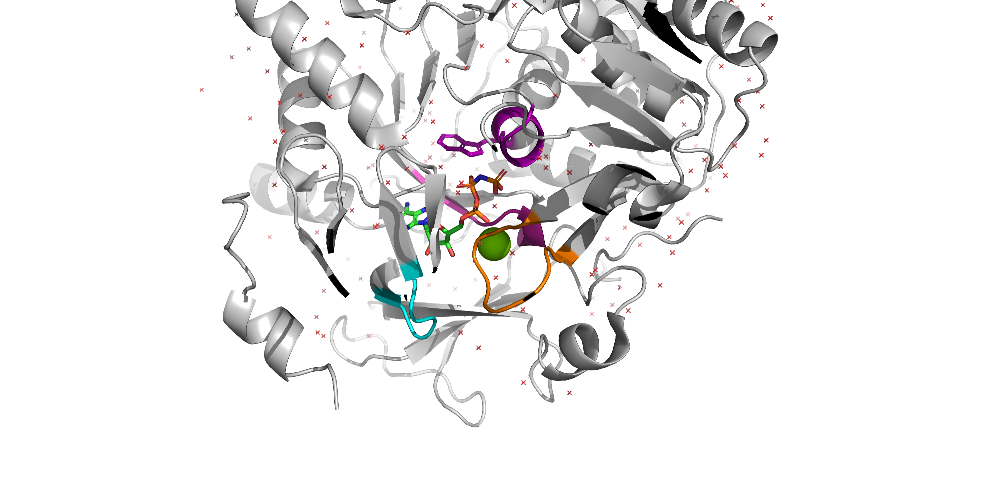
Figure 23 — template ttLACS with four motifs annotated. A-motif in lightmagenta, G-motif and aromatic ring in purple, L-motif in cyan and P-motif in orange.
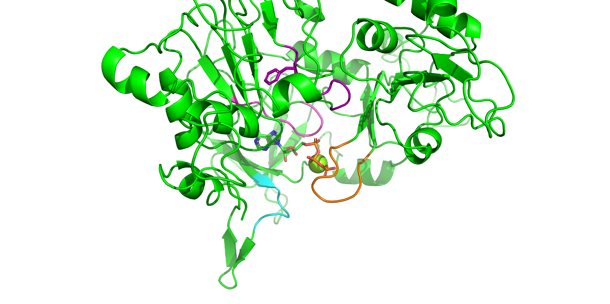
Figure 25 — target LACS1 with four motifs annotated in consistent color palette.
Figure 27 — the chosen tunnel, with G-motif and A-motif highlighted.LACS1 enzyme — homology-modeled 3D structure (animated).
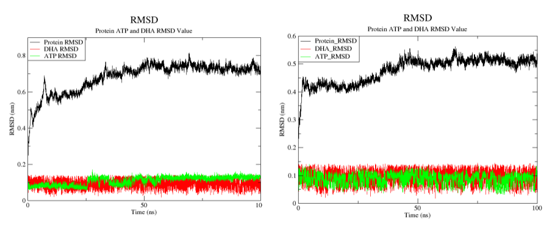
RMSD over a 100 ns MD simulation — wild-type vs mutant. Protein (black), DHA (red), ATP (green); convergence confirms a stable, analysable trajectory.